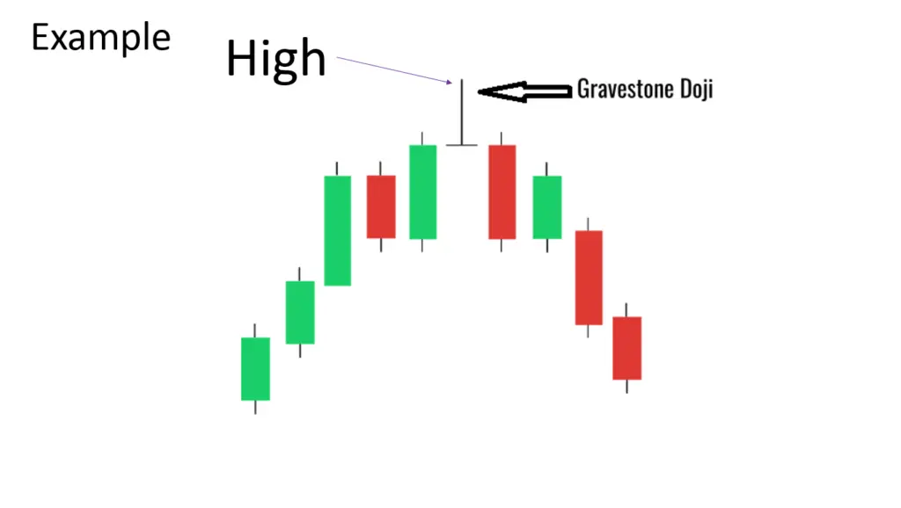
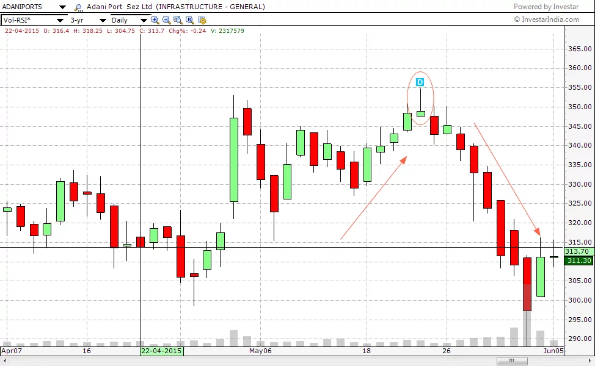
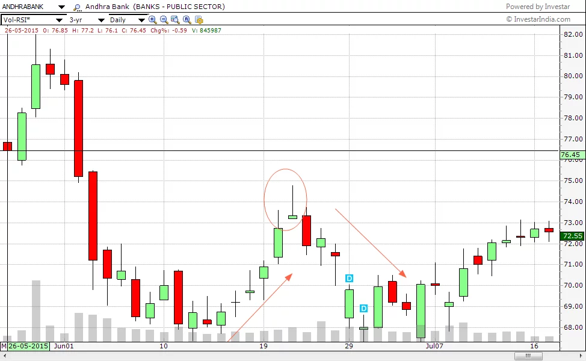
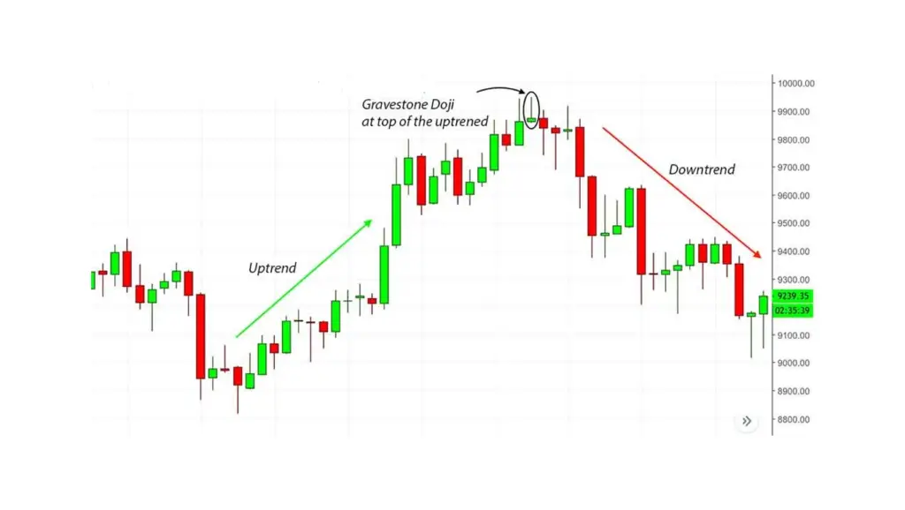
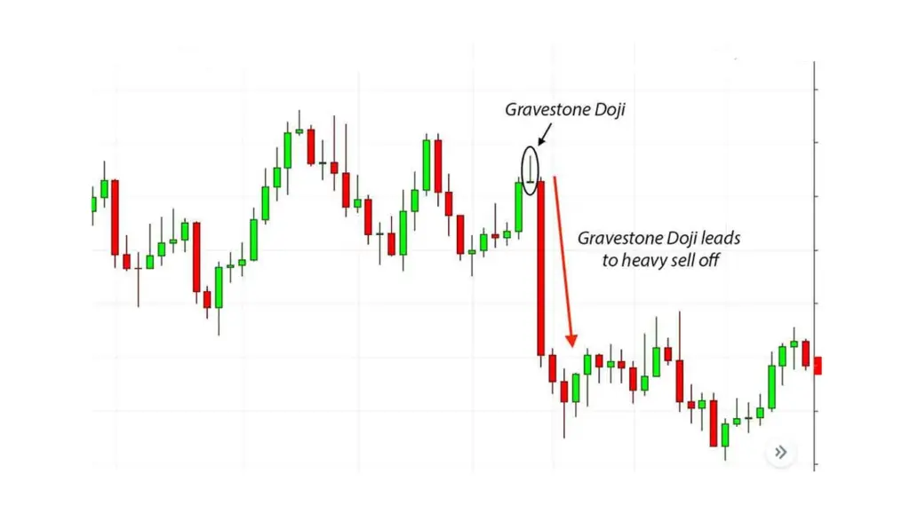

The Gravestone Doji candlestick pattern can be interpreted as a bearish reversal when it occurs at the top of uptrends. The Gravestone Doji can help traders see where resistance to a pricing increase is located. It is typically used with other technical indicators to identify a possible uptrend.
| What Does a Gravestone Doji Look Like? |
The Gravestone Doji chart pattern is an inverted “T”-shaped candlestick that’s created when the open, high, and closing prices are nearly equal. The most important part of the Gravestone Doji is the long higher shadow.

| Examples of Gravestone Doji |
Adani Ports
In the daily chart of Adani ports, we can see a Gravestone Doji formation on the date 22.05.2015. The Doji was formed with a prior uptrend from the levels of 300 to 348.

This was a rally of 16 percent and after the formation of the Gravestone Doji, the stock fell from the level of 350 to the levels of 298 which was again a fall of about 15 percent
Andhra Bank:

This daily chart of Andhra bank is another example of the Doji pattern. With a prior uptrend of about 7% from the level of 68, it formed at Doji at 73 and then reversed its trend to go back to the levels of 69.
| Chart Example 1 |

| Chart Example 2 |
